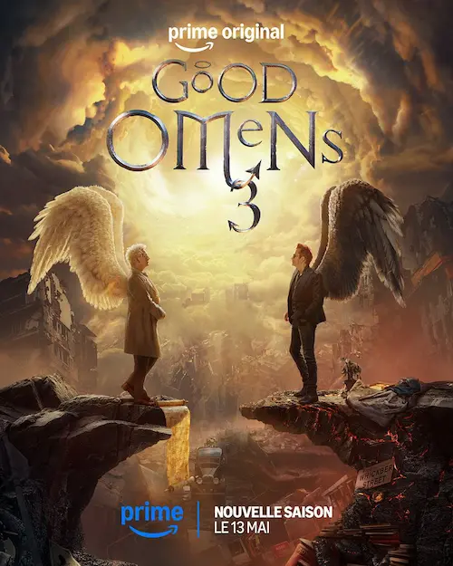
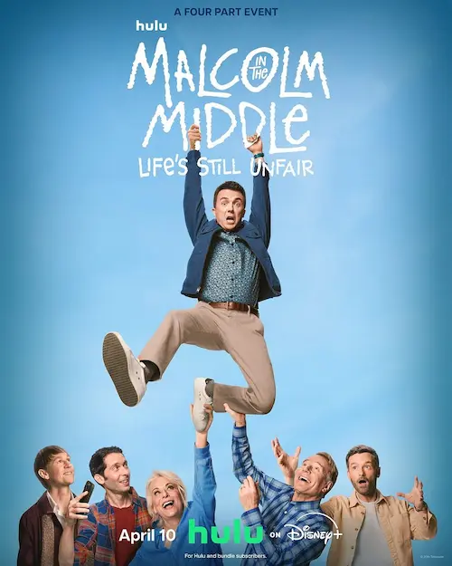
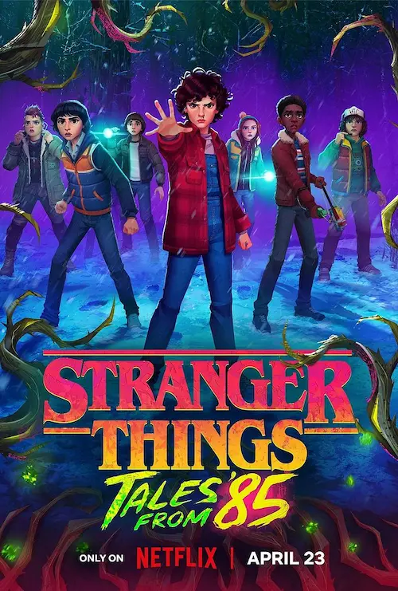

Good Omens, Malcolm, Stranger Things - Tales from '85
Après avoir revu The big bang theory, avec une certaine émotion, je me suis replongée dans quelques univers que j’avais bien appréciés par la passé.
Good Omens (saison 3), 2026
Résumé

Aziraphale détient de grandes responsabilités et doit mettre en place le Second Avènement. Malheureusement, il perd Jésus et le Livre de la Vie ! Il a besoin de l’aide de son ami de toujours, Rampa.
Mon avis
Quel plaisir de retrouver Aziraphale et Rampa ! Le pauvre démon est au fond du trou et le nouvel archange suprême se laisse submergé par le travail. Leurs idéaux et leur amour les conduiront sur la bonne voie et enfin, ils auront leur mot à dire face à Dieu.
Quelle histoire ! C’était tordu, comme d’habitude, et une bonne partie de l’histoire est nébuleuse, il faut le dire. Mais j’ai bien aimé. Je suis contente d’avoir pu voir la conclusion de l’histoire de l’ange et du démon, toujours aussi drôles et touchants.
Malcolm in the middle, Life’s still unfair, 2026
Résumé

Malcolm vit sa petite vie tranquille, le plus loin possible de sa famille, tout en donnant suffisamment de nouvelles pour éviter les conflits. Seulement, ses parents insistent pour qu’il vienne à leur fête d’anniversaire de mariage. Quand ils débarquent chez lui pour lui forcer la main, ils découvrent qu’il leur a caché sa fille. Malcolm doit assumer ses mensonges.
Mon avis
C’est amusant de retrouver Malcolm et toute sa famille. Ils n’ont pas beaucoup changé, en fin de compte. On retrouve bien l’humour, l’absurdité et le chaos de la famille de Malcolm dans une histoire qui aborde de nombreux sujets finalement assez profonds et importants sur les dynamiques familiales.
Je ne me rappelais plus du tout la conclusion de la première série Malcolm, sinon les grandes lignes, et cette suite était assez facile à suivre.
Stranger Things, Tales from ’85, 2026
Résumé

Après avoir renvoyé le flagelleur mental et les démons-chiens dans le monde à l’envers, et après que Onze a enfin fermé le portail, la bande d’amis se prépare à passer des vacances d’hiver tranquilles à Hawkins. C’est sans compter sur l’apparition de nouvelles créatures.
Mon avis
Reprendre l’univers et écrire une sorte de fan-fiction n’est pas une mauvaise idée. D’autant que le nouveau personnage principal est très sympa. Malheureusement, l’histoire est plutôt ennuyeuse et ne tient pas trop la route.
Il semble qu’il y aura une saison 2… Pourquoi ? L’intrigue se situe entre la saison 2 et la saison 3 de la série principale. Il n’y a pas de place pour une histoire parallèle avec d’autres personnages.
À part ça, le style graphique était cool, l’ambiance années 80’ toujours au top. Si l’ambiance musicale avait suivi, ça aurait été top.
Cool cool cool les séries. Il y en aura encore d’autres à découvrir, et c’est tant mieux 😛.